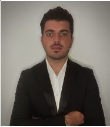

CURRICULUM VITAE

VASILLAQ SHTEMBARI
About me:
My name is Vasillaq Shtembari, I am 26 years old, of Albanian origin, but I have been living in Italy for 7 years. I am a student, I will graduate next month and I am very interested in the world of technology although I have no direct experience.You can contact me:
Position: Customer Specialist for Zalando Spain Manpower s.r.l
Sector: Customer care
Employer: Majorel
Dates: 20/10/2020 – 28/06/2021
Successes achivied: : Through my language and management skills developed activities with foreign partners
City: Milano
Position: Manager, coordinator team manager, customer support and search for new customers
Sector: Delivery
Employer: Take My Things
Dates: 01/09/2018 - 23/09/2019
Successes achivied: : This position helped me how to manage clients and understand their needs
City: Milano
LANGUAGES:
TECHNICAL SKILLS: